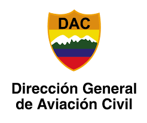
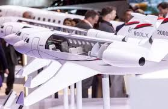
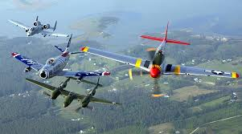
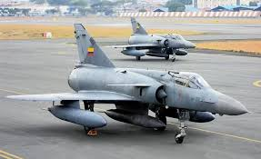

Se entiende por aviación al diseño, desarrollo, fabricación, producción, operación y utilización para fines privados o comerciales de aeronaves, especialmente las más pesadas que el aire
 Las Fuerzas Armadas son los usuarios de la aviación militar, bien a través de organizaciones independientes especializadas, como la fuerza aérea, o bien mediante servicios integrados en otras ramas no estrictamente aeronáuticas, como la aviación naval o la aviación agregada a las fuerzas terrestres.
 